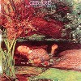
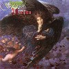

|
#ジェラルドはノヴェラのキーボードのの永川敏郎さんのソロプロジェクトです。 1985年ごろに結成され、2枚のアルバムと1枚のミニアルバムを出しますが、リズム隊の脱退により活動を停止します。 その後アースシェイカーで活動してますが1990に入ってから五十嵐公太さんと永井敏巳さんを加えて最結成します。 現在のギター無しのキーボードトリオ + 外人ボーカルーになり再び精力的に活動をしています。かなり密度の高いプログレハードが聴けます。 今現在最も活動的な日本のプログレグループかな？ オフィシャルサイトOrpheus |
|

